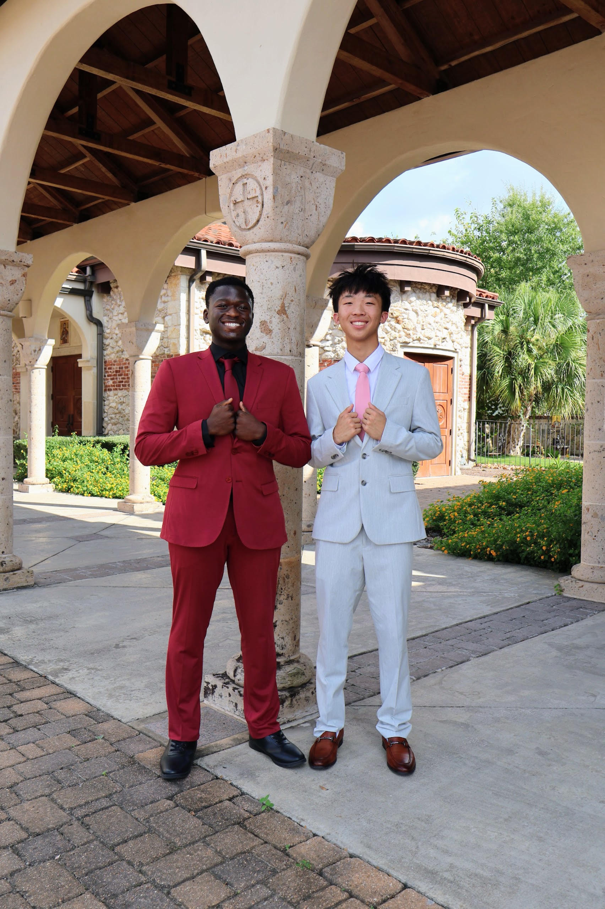

MEET YOUR FRONT OFFICE
Two fans. Plenty of opinions.
We are Aiden Lin and Toni Ladeji, the owners and founders of The Fantasy GM. Football gives us something to talk about. Data and statistics give us a way to look a little closer.

Owners and founders
OUR STORY
There is more to a trade than a big name.
That idea is what led us to The Fantasy GM. Fantasy football puts you in charge of a roster, but deciding whether a trade helps your team is not always obvious. An exciting player can grab your attention before you have thought through what you are giving up.
We wanted to create a place where managers could slow down, compare both sides, and understand the offer more clearly. The goal was a tool that felt useful without making every decision feel like a math assignment.
Why we care about the numbers
We both enjoy football, but we are also interested in the patterns behind the game. Targets, touches, consistency, and a player's role can reveal things that a highlight clip or one big performance might miss.
Our interest in data and statistics inspired GM Score, our ranking-based player rating. It gives managers a common starting point for comparing players while leaving room for their own football knowledge.
What we want to build
We want The Fantasy GM to make trade discussions more informed and more enjoyable. Whether you are new to fantasy football or the person constantly sending offers to your league, the idea is the same: understand the deal before making the move.
Take a look at the analyzer